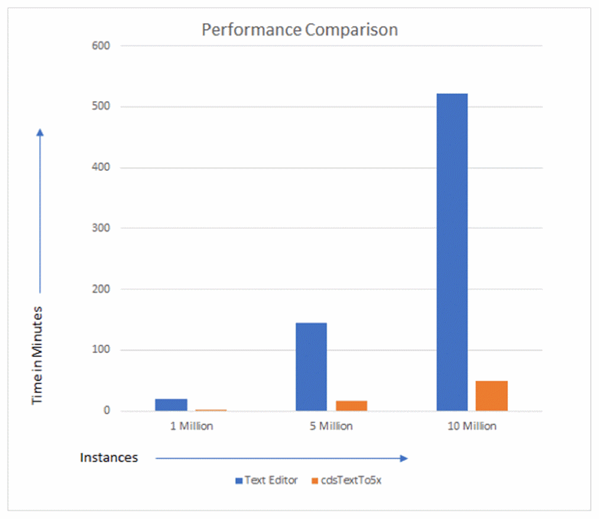

Performance of cdsTextTo5x
Consider a scenario where a Verilog file contains a cell definition that comprises 1 million, 5 million, and 10 million instances whose master (symbols) exist in a reference library.
The following illustration shows the difference in performance of cdsTextTo5x as compared to Text Editor when evaluated on an exclusive system with 90GB RAM:

Sample results and performance in the above scenarios are as follows:
- Instances: 1 million
- Instances: 5 million
- Instances: 10 million, and 20 million vector pins at the top level
The results above clearly indicate that cdsTextTo5x delivers faster and better performance when importing analog, digital, or mixed-signal netlist files.
Related Topics
Design Data Import by Using cdsTextTo5x
Comparison between cdsTextTo5x and Virtuoso Text Editor
Importing a Verilog File Using the cdsTextTo5x Command
Return to top